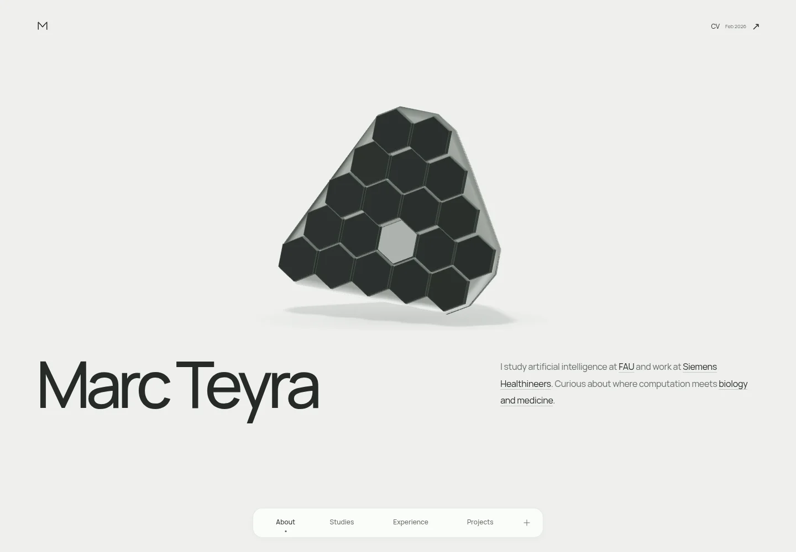
Island, Wing & Fold
Two sculptural directions in the same quiet layout: an avatar-inspired tiled wing, and a continuous silver ribbon folded into an M. Both turn to reveal their reverse.
Different ways of making a place on the web. These earlier homepage studies remain here to explore, compare and revisit.

Two sculptural directions in the same quiet layout: an avatar-inspired tiled wing, and a continuous silver ribbon folded into an M. Both turn to reveal their reverse.
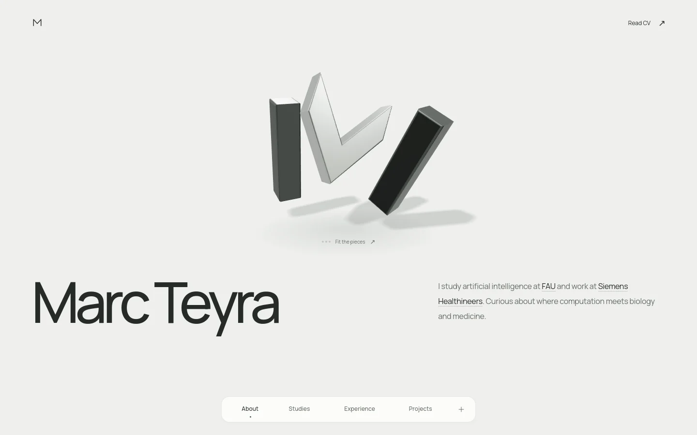
The first published Island: a wider introduction, optional M assembly, and separate rings, plates and frames alongside the studies, experience and project index.
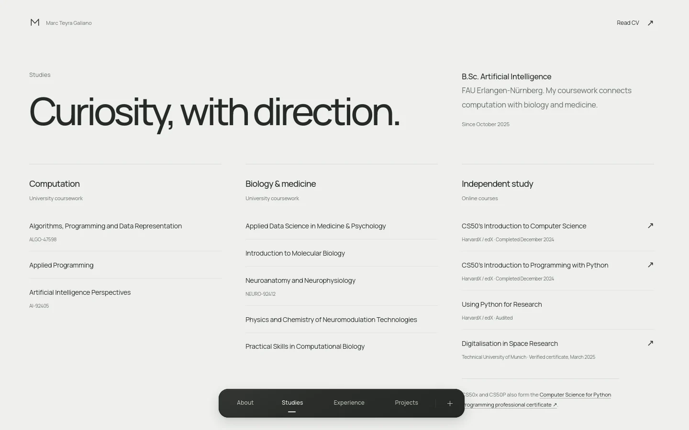
The sculptural introduction continues into wider reading pages. Studies and experience share three aligned columns, projects sit in two, and a satin graphite navigation bar holds the four chapters together.
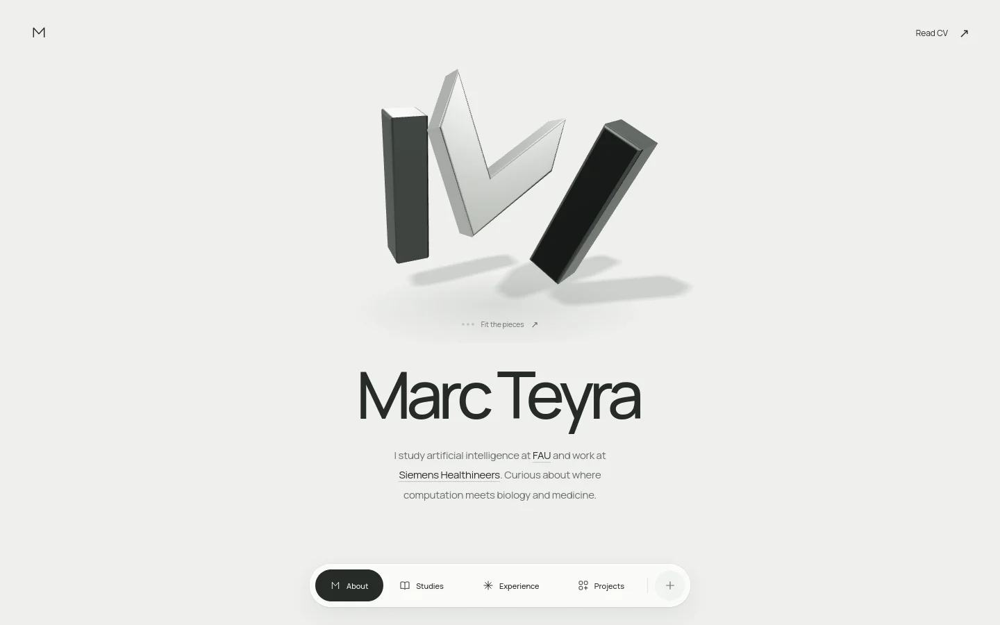
A quiet introduction, a three-piece metallic M and a floating island of navigation. The first edition pairs a playful sculpture with simple reading pages for studies, experience and projects.
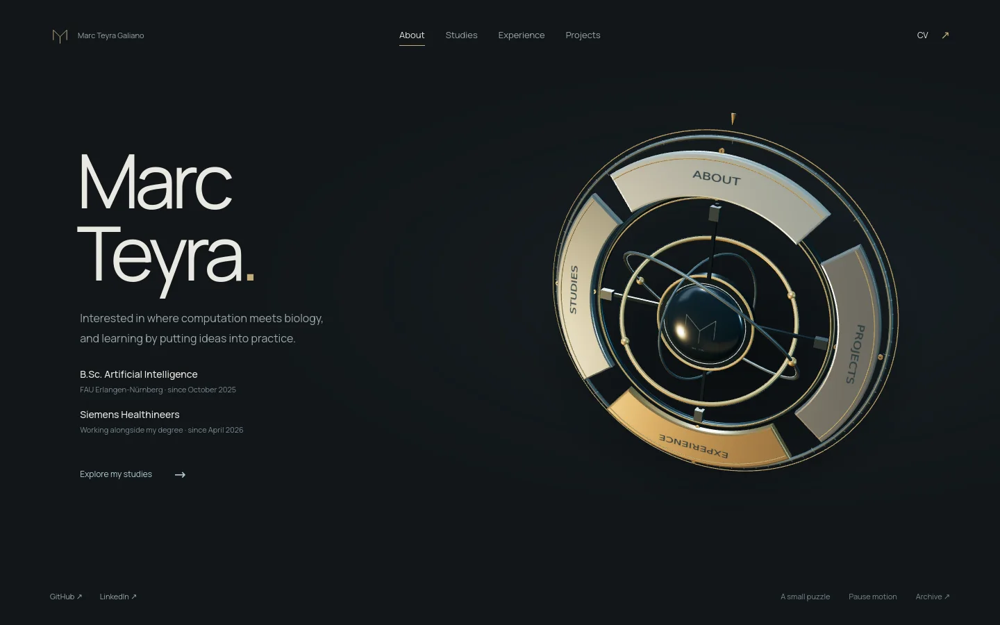
One subject at a time: About, Studies, Experience and Projects. A turning orbital instrument follows each chapter, while coursework, detailed accounts and an optional puzzle remain separate.
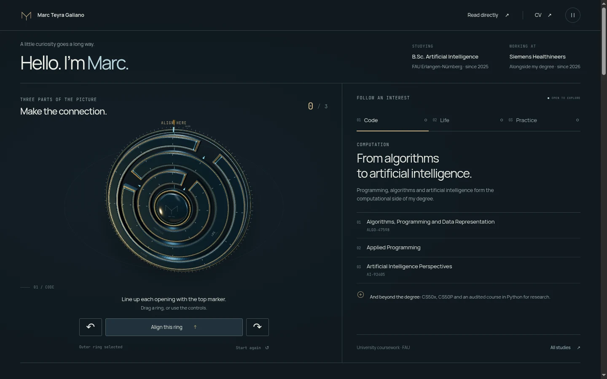
Three physical rings connect Code, Life and Practice, then open into a layered mechanism. Coursework and experience sit beside the puzzle, with a complete reading view available throughout.
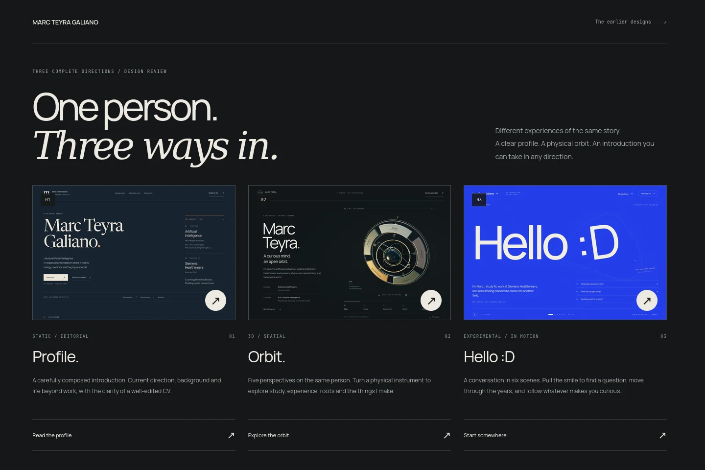
Three complete introductions to the same person: a typographic profile, a physical orbit and a conversation in six animated scenes. Preserved together with their original comparison page.
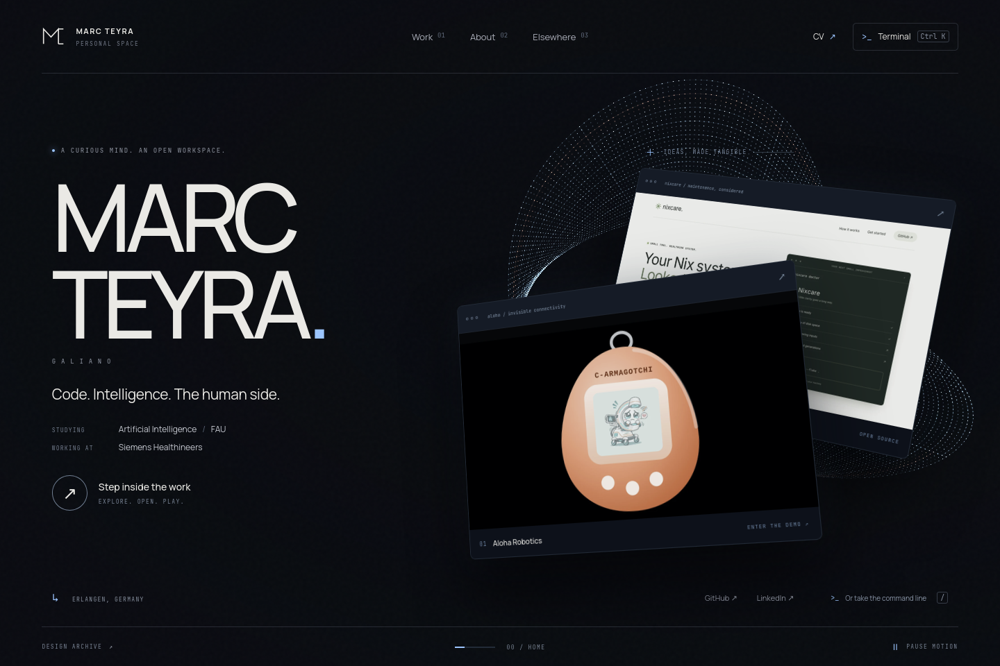
A continuous particle sculpture, a working terminal and floating windows into actual public projects. The same material morphs across study, work and travel.
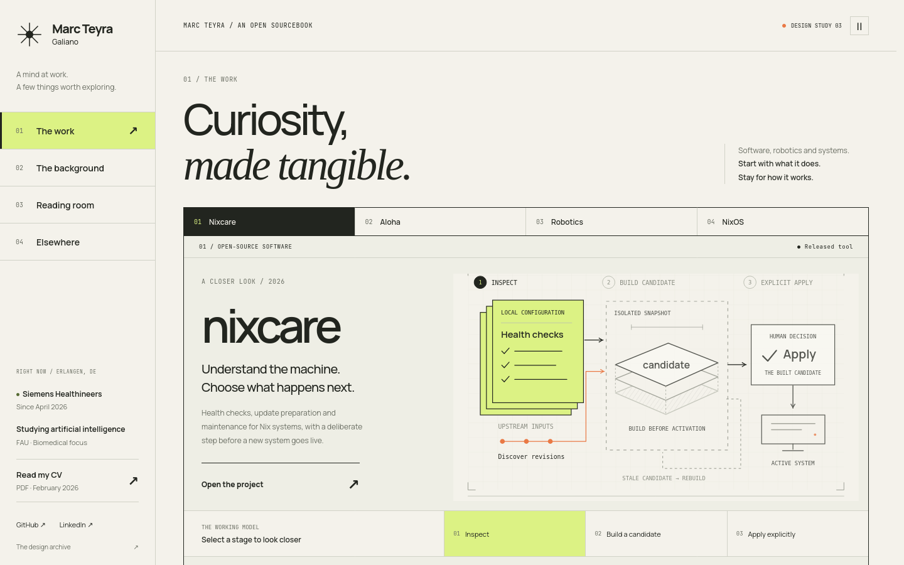
A reading-first portfolio in paper, ink and lime. Project plates lead into longer overviews, an illustrated engineering study, an interactive hinge model and a personal travel atlas.
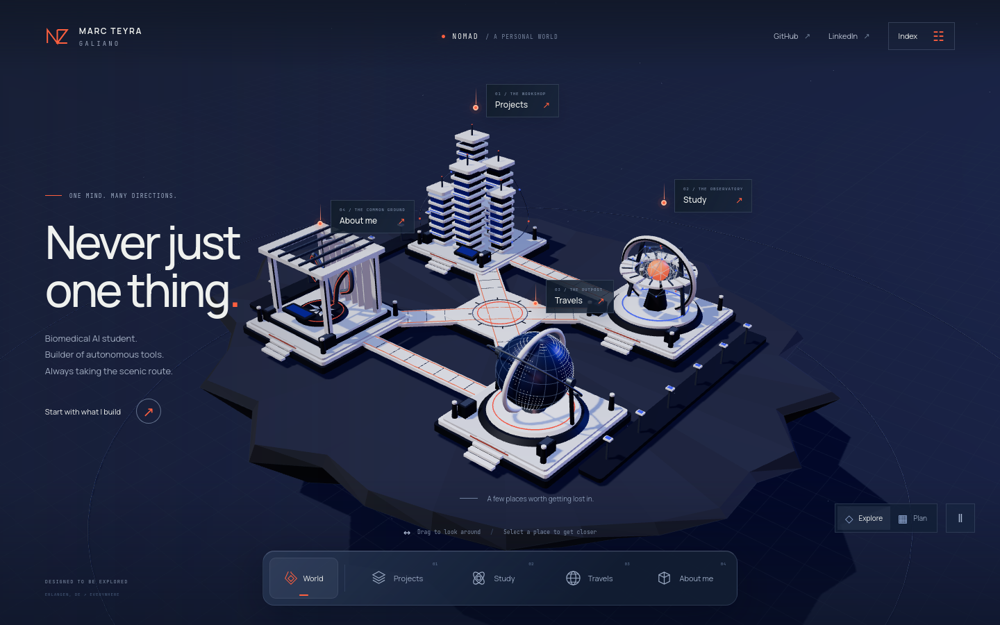
An architectural campus for projects, study, travel and the person behind them. Porcelain structures, cobalt night, a navigable world and an accompanying Atlas Studio.
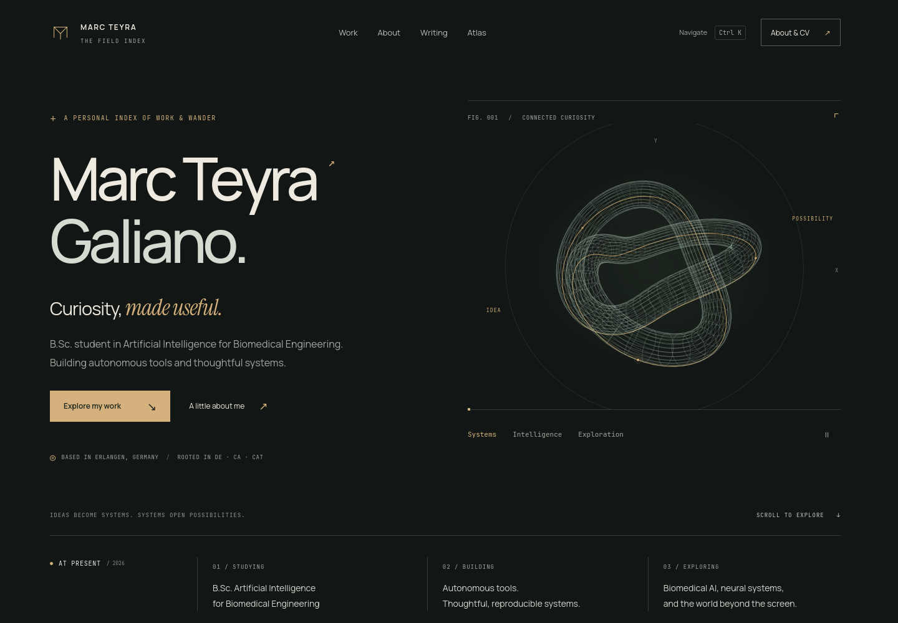
A personal observatory in forest green and warm paper. An animated mathematical instrument anchors a reading experience with projects, writing, a command palette and a country atlas.
These are preserved design studies. Their content and profile details reflect the stage at which each version was made. For the current version, return to the homepage.